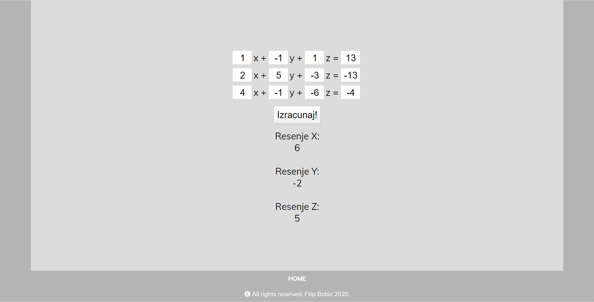

Riven's Sword (League of Legends)
Mač lika Riven iz poznate igrice League of Legends. Projekat je rađen kao maturski rad za završetak srednje škole.
Ovo je "high poly" replika modela iz igrice. 3D model je urađen u programu Maya3D.
Ovo je "high poly" replika modela iz igrice. 3D model je urađen u programu Maya3D.
CandyShop Website
CandyShop je website rađen kao projekat iz predmeta Web Dizajn iz trećeg semestra VIŠER-a.
Projekat je podrazumevao pravljenje komercijalnog sajta sa Bootstrap 4 bibliotekom.
CandyShop je imaginarna web prodavnica slatkiša po uzoru na "Dylan's candy bar".
Sajt ima više od 12 stranica sa različitim Bootstrap komponentama.
Možete pogledati sajt na linku ovde.
Možete pogledati sajt na linku ovde.
SKI Website

Sajt je pravljen za projekat iz predmeta Standardni Korisnički Interfejsi iz 3. semestra studija.
Projekat je napravljen kompletno iz početka uz pomoć HTML, CSS i JavaScript-a.
Svrha programa je web dizajn sa implementacijom JavaScript-a, tako da je i projekat zahtevao snalaženje u ovom jeziku.
Projekat ima četiri strane, početnu stranu i 3 zadatka. Početna strana se sastoji od CSS animirane reklame na vrhu strane,
3 link-a koji vode do stranica sa zadacima, sekciju sa podacima o studentu i sekciju sa tekstom koji se menja na svakih 10 sekundi.
Prvi zadatak je program koji izračunava sistem od 3 jednačine sa 3 nepoznate i ispisuje rešenje.
Drugi zadatak je implementacija video player-a sa opcijom odabira sadržaja na stranici.
Treći zadatak je igrica. Brojevi se pojavljuju naizmenično na ekranu u tabeli 4x4 u rastućem poretku. Igrač treba da klikne na 16 brojeva za 10 sekundi ili manje kako bi pobedio.
Svaka stranica ima i footer sa linkom za vraćanje na početnu stranicu.
Primer sajta možete videti na linku ovde.
Drugi zadatak je implementacija video player-a sa opcijom odabira sadržaja na stranici.
Treći zadatak je igrica. Brojevi se pojavljuju naizmenično na ekranu u tabeli 4x4 u rastućem poretku. Igrač treba da klikne na 16 brojeva za 10 sekundi ili manje kako bi pobedio.
Svaka stranica ima i footer sa linkom za vraćanje na početnu stranicu.
Primer sajta možete videti na linku ovde.
Igrica "Battleships"


Igrica je urađena kao ispitni projekat za predmet Objektno Orjentisano Projektovanje.
Zadatak projekta je bio da se napravi Java aplikacija uz pomoć osnovnih osobina objektno orjentisanog programiranja,
korišćenje klasa, interfejsa, metoda i njihova međusobna povezanost.
U pitanju je popularna društvena igra Battleships (Potapanje podmornica). Napravljena je da bude prikazana u konzoli radi jednostavnosti programa ali bi sam kod mogao biti povezan i sa UI elementima. Ideja za igru je da dva igrača imaju program i jedan drugom postave brodove na tablu i kada potvrde položaj pokrenu igru. Nakon što je igra pokrenuta, pozicije brodova postanu skrivene i igrači imaju zadatak da za što manje poteza potope sve protivničke brodove. Na kraju igre, igrači dobiju informaciju o tome koliko im je poteza trebalo da završe igru i pobednik je onaj sa najmanje poteza. Takođe rezultati su logovani u .txt fajl sa datumom igre i rezultatom.
Program je postavljen na GitHub-u i mozete ga pogledati na linku ovde.
U pitanju je popularna društvena igra Battleships (Potapanje podmornica). Napravljena je da bude prikazana u konzoli radi jednostavnosti programa ali bi sam kod mogao biti povezan i sa UI elementima. Ideja za igru je da dva igrača imaju program i jedan drugom postave brodove na tablu i kada potvrde položaj pokrenu igru. Nakon što je igra pokrenuta, pozicije brodova postanu skrivene i igrači imaju zadatak da za što manje poteza potope sve protivničke brodove. Na kraju igre, igrači dobiju informaciju o tome koliko im je poteza trebalo da završe igru i pobednik je onaj sa najmanje poteza. Takođe rezultati su logovani u .txt fajl sa datumom igre i rezultatom.
Program je postavljen na GitHub-u i mozete ga pogledati na linku ovde.
C# aplikacija prodavnice


U pitanju je aplikacija napravljena kao prvi projektni rad iz predmeta Tehnike Vizuelnog Programiranja.
Cilj projekta je bio da se napravi Windows Forms aplikacija koja se može koristiti kao prodavnica.
Program je pisan u Visual Studiu u C# programskom jeziku. Pri pokretanju aplikacije korisnik mora prvo da se uloguje.
Postoje dve vrste naloga, Korisnički i Administratorski.
Korisnički nalozi mogu samo da pregledaju dostupne proizvode, prave porudžbine i otkazuju porudžbine koje su oni napravili. Administratorski nalozi pored ovih opcija imaju mogućnost da upravljaju registrovanim korisnicima i proizvodima (dodaju nove i menjaju podatke već postojećih), i imaju mogućnost da pregledaju statistiku o prodajama prodavnice, gde se prikazuje broj porudžbina u proteklih godinu dana u formi dijagrama po mesecima.
Svi podaci se čuvaju u tekstualnim datotekama koje se obrađuju po potrebi u programu.
Program je postavljen na GitHub-u i mozete ga pogledati na linku ovde.
Korisnički nalozi mogu samo da pregledaju dostupne proizvode, prave porudžbine i otkazuju porudžbine koje su oni napravili. Administratorski nalozi pored ovih opcija imaju mogućnost da upravljaju registrovanim korisnicima i proizvodima (dodaju nove i menjaju podatke već postojećih), i imaju mogućnost da pregledaju statistiku o prodajama prodavnice, gde se prikazuje broj porudžbina u proteklih godinu dana u formi dijagrama po mesecima.
Svi podaci se čuvaju u tekstualnim datotekama koje se obrađuju po potrebi u programu.
Program je postavljen na GitHub-u i mozete ga pogledati na linku ovde.
C# Knjižara


Aplikacija Knjižare je takođe pravljena kao projektni rad iz predmeta Tehnike Vizuelnog Programiranja.
Zadatak ovog projekta je bio da se napravi Windows Forms aplikacija korišćenjem C# programskog jezika i
da se svi podaci korišćeni u samoj aplikaciji čuvaj u SQL ili Microsoft Access bazi podataka.
Aplikacija ima mogućnost pretrage po imenu autora ili nazivu knjige. Proizvodi mogu biti i filtrirani na osnovu kategorije kojoj pripadaju.
Dodavanje novih knjiga pravi novi objekat koji je potom dodat u bazu podataka i prikazan u prodavnici.
Klikom na dugme kupi, pravi se log o kupovini koji je takođe dodat u bazu podataka. Ovaj log sadrži podatke o kupljenim proizvodima i njihovoj ceni. I nakon kupovine, aplikacija prazni korpu i spremna je za sledeću kupovinu.
Program je postavljen na GitHub-u i mozete ga pogledati na linku ovde.
Aplikacija ima mogućnost pretrage po imenu autora ili nazivu knjige. Proizvodi mogu biti i filtrirani na osnovu kategorije kojoj pripadaju.
Dodavanje novih knjiga pravi novi objekat koji je potom dodat u bazu podataka i prikazan u prodavnici.
Klikom na dugme kupi, pravi se log o kupovini koji je takođe dodat u bazu podataka. Ovaj log sadrži podatke o kupljenim proizvodima i njihovoj ceni. I nakon kupovine, aplikacija prazni korpu i spremna je za sledeću kupovinu.
Program je postavljen na GitHub-u i mozete ga pogledati na linku ovde.